整体跟踪分析简介 ¶
创建于：2025 年 4 月 1 日 | 最后更新：2025 年 4 月 1 日 | 最后验证：2024 年 11 月 5 日
作者：Anupam Bhatnagar
在本教程中，我们演示如何使用整体跟踪分析（HTA）来分析分布式训练作业的跟踪。要开始，请按照以下步骤操作。
安装 HTA
我们推荐使用 Conda 环境安装 HTA。有关安装 Anaconda 的信息，请参阅官方 Anaconda 文档。
使用 pip 安装 HTA：
pip install HolisticTraceAnalysis
（可选且推荐）设置 Conda 环境：
# create the environment env_name conda create -n env_name # activate the environment conda activate env_name # When you are done, deactivate the environment by running ``conda deactivate``
入门指南
启动 Jupyter 笔记本并将 trace_dir 变量设置为跟踪文件的位置。
from hta.trace_analysis import TraceAnalysis
trace_dir = "/path/to/folder/with/traces"
analyzer = TraceAnalysis(trace_dir=trace_dir)
时间分解 ¶
为了有效地利用 GPU，了解它们在特定任务上的时间花费至关重要。它们主要在计算、通信、内存事件中忙碌，还是处于空闲状态？时间分解功能提供了这三个类别所花费时间的详细分析。
空闲时间 - GPU 处于空闲状态。
计算时间 - GPU 正在用于矩阵乘法或向量运算。
非计算时间 - GPU 正在用于通信或内存事件。
要实现高训练效率，代码应最大化计算时间，最小化空闲时间和非计算时间。以下函数生成一个数据框，详细说明了每个进程的时序使用情况。
analyzer = TraceAnalysis(trace_dir = "/path/to/trace/folder")
time_spent_df = analyzer.get_temporal_breakdown()
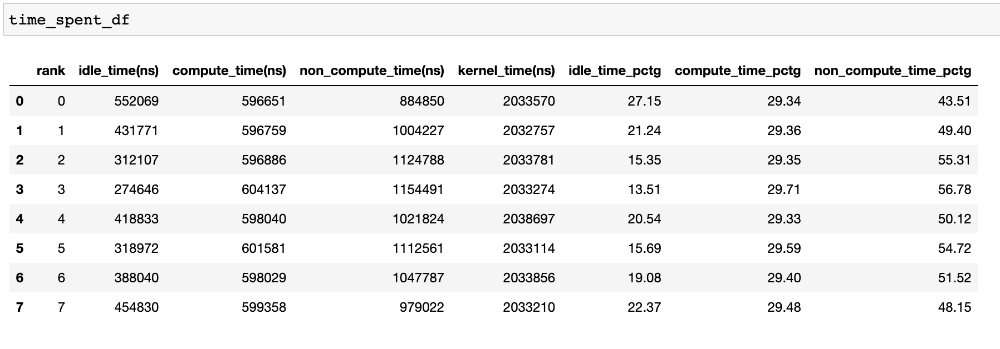
当在 get_temporal_breakdown 函数中将 visualize 参数设置为 True 时，它还会生成一个按进程划分的条形图来表示分解情况。
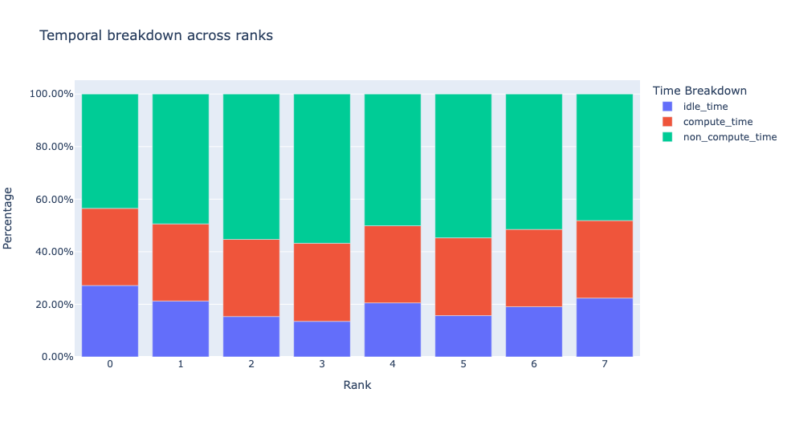
闲置时间分解 ¶
了解 GPU 闲置时间的数量及其原因可以帮助指导优化策略。当没有内核在 GPU 上运行时，GPU 被视为闲置。我们已经开发了一种算法，将闲置时间分为三个不同的类别：
主机等待：指由 CPU 未能快速将内核入队以充分利用 GPU 而导致的 GPU 闲置时间。这些类型的不效率可以通过检查导致减速的 CPU 操作符、增加批次大小和应用操作符融合来解决。
内核等待：这指的是在 GPU 上启动连续内核相关的短暂开销。可以通过使用 CUDA 图优化来最小化归因于这一类别的闲置时间。
其他等待：本类别包括由于信息不足而无法归因的空闲时间。可能的原因包括使用 CUDA 事件在 CUDA 流之间的同步以及内核启动延迟。
主机等待时间可以解释为 GPU 因 CPU 而停滞的时间。为了将空闲时间归因于内核等待，我们使用以下启发式方法：
连续内核之间的间隔小于阈值
默认阈值值为 30 纳秒，可以使用 consecutive_kernel_delay 参数进行配置。默认情况下，仅计算 rank 0 的空闲时间分解。为了计算其他 rank 的分解，请在 get_idle_time_breakdown 函数中使用 ranks 参数。空闲时间分解可以按以下方式生成：
analyzer = TraceAnalysis(trace_dir = "/path/to/trace/folder")
idle_time_df = analyzer.get_idle_time_breakdown()
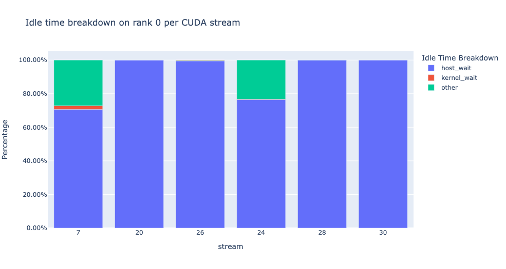
函数返回一个包含数据框的元组。第一个数据框包含每个流在每个排名上的空闲时间按类别划分。
{kind=link}
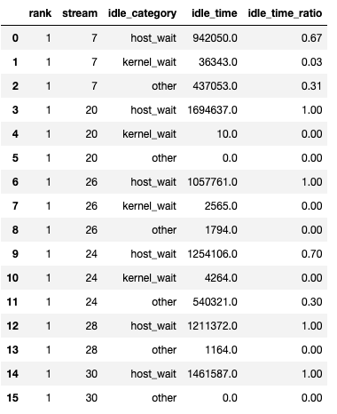
当设置 show_idle_interval_stats 为 True 时生成第二个数据框。它包含每个流在每个排名上的空闲时间的汇总统计信息。
{kind=link}
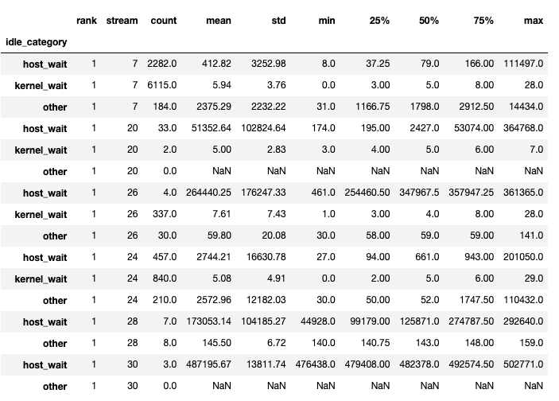
提示
默认情况下，空闲时间分解显示每个空闲时间类别的百分比。将 visualize_pctg 参数设置为 False ，函数将在 y 轴上显示绝对时间。
内核分解 ¶
内核分解功能可以将每个内核类型（如通信（COMM）、计算（COMP）和内存（MEM））在所有进程中的耗时进行分解，并展示每个类别所花费时间的比例。以下是每个类别所花费时间的饼图百分比：
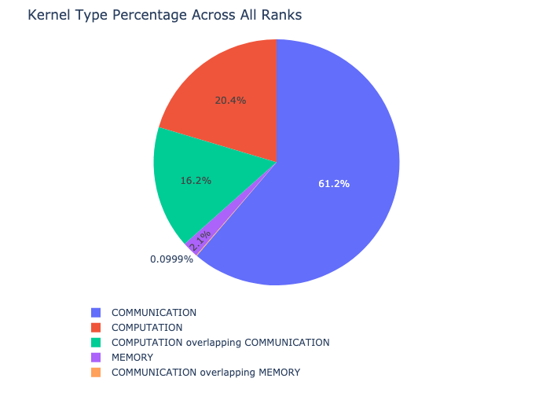
内核分解的计算方法如下：
analyzer = TraceAnalysis(trace_dir = "/path/to/trace/folder")
kernel_type_metrics_df, kernel_metrics_df = analyzer.get_gpu_kernel_breakdown()
函数返回的第一个 dataframe 包含用于生成饼图的原始值。
内核持续时间分布 ¶
get_gpu_kernel_breakdown 返回的第二个数据框包含了每个内核的持续时间汇总统计信息。具体来说，这包括每个内核在每个 rank 上的计数、最小值、最大值、平均值、标准差、总和以及内核类型。
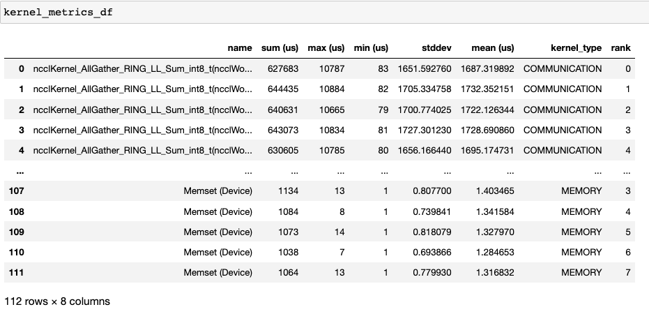
利用这些数据，HTA 创建了许多可视化图表来识别性能瓶颈。
每个 rank 每个内核类型的顶级内核的饼图。
所有 rank 中每个顶级内核和每个内核类型的平均持续时间柱状图。
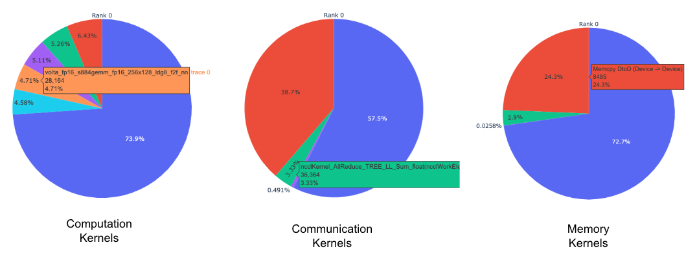
提示
所有图像均使用 plotly 生成。将鼠标悬停在图上，右上角会显示模式栏，用户可以通过它进行缩放、平移、选择和下载图形。
上面的饼图显示了前 5 个计算、通信和内存内核。每个排名都会生成类似的饼图。饼图可以通过传递给 get_gpu_kernel_breakdown 函数的 num_kernels 参数来配置显示前 k 个内核。此外，可以使用 duration_ratio 参数调整需要分析的时间百分比。如果同时指定了 num_kernels 和 duration_ratio ，则 num_kernels 具有优先级。
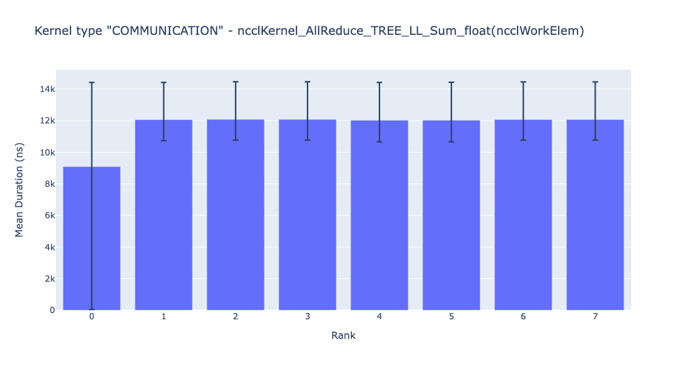
上面的柱状图显示了所有排名的 NCCL AllReduce 内核的平均持续时间。黑色线条表示每个排名所花费的最短和最长时间。
警告
当使用 jupyter-lab 时，请将“image_renderer”参数的值设置为“jupyterlab”，否则图形将无法在笔记本中渲染。
有关此功能的详细说明，请参阅 repo 示例文件夹中的 gpu_kernel_breakdown 笔记本。
通信计算重叠 ¶
在分布式训练中，大量时间被用于 GPU 之间的通信和同步事件。为了实现高 GPU 效率（如 TFLOPS/GPU），保持 GPU 被计算内核过度占用至关重要。换句话说，GPU 不应因未解决的数据依赖而阻塞。衡量计算因数据依赖而受阻程度的一种方法就是计算通信计算重叠。如果通信事件与计算事件重叠，则观察到更高的 GPU 效率。缺乏通信和计算重叠会导致 GPU 空闲，从而降低效率。总之，更高的通信计算重叠是可取的。为了计算每个 rank 的重叠百分比，我们测量以下比率：
(在通信时花费的计算时间) / (花费在通信上的时间)
通信计算重叠可以按以下方式计算：
analyzer = TraceAnalysis(trace_dir = "/path/to/trace/folder")
overlap_df = analyzer.get_comm_comp_overlap()
函数返回一个包含每个排名重叠百分比的 dataframe。
{kind=link}
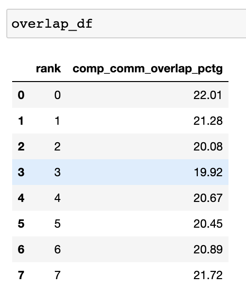
当将 visualize 参数设置为 True 时，get_comm_comp_overlap 函数还会生成一个按排名表示的重叠条形图。
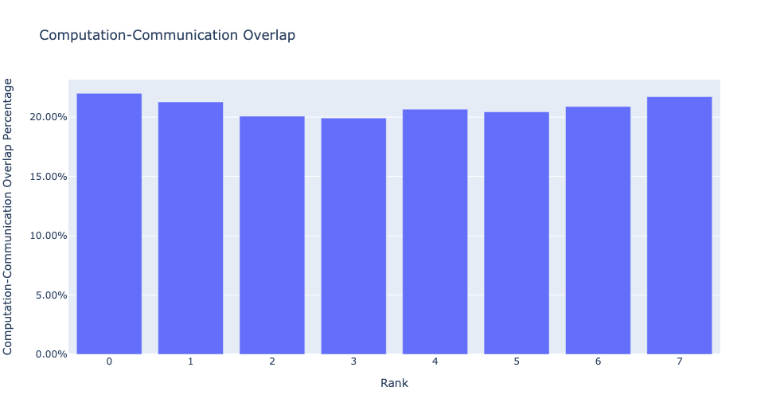
增强计数器 §
内存带宽 & 队列长度计数器 ¶
内存带宽计数器测量在通过内存复制（memcpy）和内存设置（memset）事件从 H2D、D2H 和 D2D 复制数据时使用的内存复制带宽。HTA 还计算每个 CUDA 流上挂起的操作数量。我们将其称为队列长度。当流上的队列长度达到 1024 或更大时，无法在该流上安排新事件，CPU 将暂停，直到 GPU 流上的事件处理完毕。
generate_trace_with_counters API 输出包含内存带宽和队列长度计数器的新跟踪文件。新跟踪文件包含指示 memcpy/memset 操作使用的内存带宽的轨迹，以及每个流上的队列长度轨迹。默认情况下，这些计数器使用编号为 0 的跟踪文件生成，新文件名称中包含后缀 _with_counters 。用户可以选择使用 generate_trace_with_counters API 中的 ranks 参数生成多个编号的计数器。
analyzer = TraceAnalysis(trace_dir = "/path/to/trace/folder")
analyzer.generate_trace_with_counters()
生成包含增强计数器的跟踪文件截图。
{kind=link}
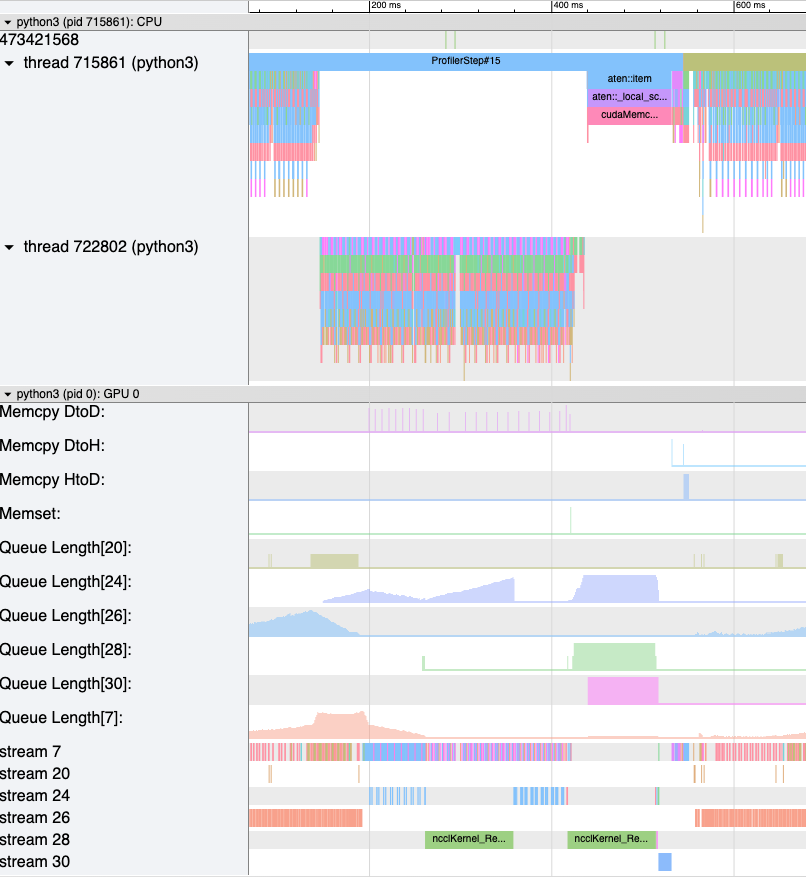
HTA 还提供了内存复制带宽和队列长度计数器的汇总，以及使用以下 API 对代码分析部分的计数器的时间序列：
查看摘要和时间序列，请使用：
# generate summary
mem_bw_summary = analyzer.get_memory_bw_summary()
queue_len_summary = analyzer.get_queue_length_summary()
# get time series
mem_bw_series = analyzer.get_memory_bw_time_series()
queue_len_series = analyzer.get_queue_length_series()
摘要包含计数、最小值、最大值、平均值、标准差、25%、50%和 75%分位数。
{kind=link}
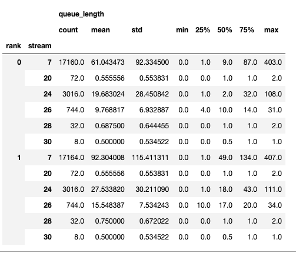
时间序列仅包含值变化时的点。一旦观察到值，时间序列将保持不变，直到下一次更新。内存带宽和队列长度时间序列函数返回一个字典，其键是排名，值是该排名的时间序列。默认情况下，仅计算排名 0 的时间序列。
CUDA 内核启动统计信息 ¶
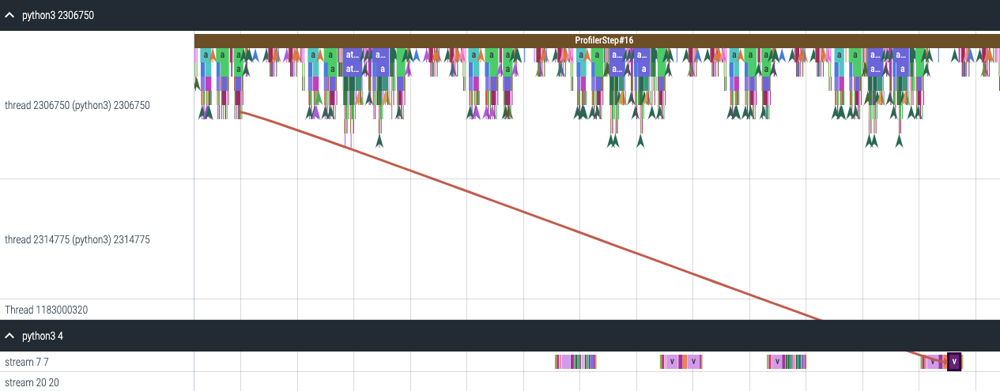
对于在 GPU 上启动的每个事件，CPU 上都有一个相应的调度事件，例如 CudaLaunchKernel ， CudaMemcpyAsync ， CudaMemsetAsync 。这些事件通过一个共同的关联 ID 在跟踪中相互关联——参见上图。该功能计算 CPU 运行时间事件、相应的 GPU 内核和启动延迟的持续时间，例如 GPU 内核启动和 CPU 操作结束之间的差异。内核启动信息可以按以下方式生成：
analyzer = TraceAnalysis(trace_dir="/path/to/trace/dir")
kernel_info_df = analyzer.get_cuda_kernel_launch_stats()
下图给出了生成的数据框截图。
{kind=link}
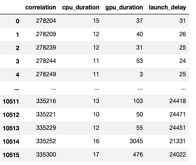
CPU 操作、GPU 内核和启动延迟的持续时间使我们能够找到以下内容：
短 GPU 内核 - 持续时间小于相应 CPU 运行时事件的 GPU 内核。
运行时事件异常值 - 持续时间过长的 CPU 运行时事件。
启动延迟异常值 - 调度时间过长的 GPU 内核。
HTA 为上述三类中的每一类生成分布图。
短 GPU 内核
通常，CPU 端的启动时间在 5-20 微秒之间。在某些情况下，GPU 的执行时间甚至低于启动时间。下方的图表有助于我们了解此类实例在代码中出现的频率。
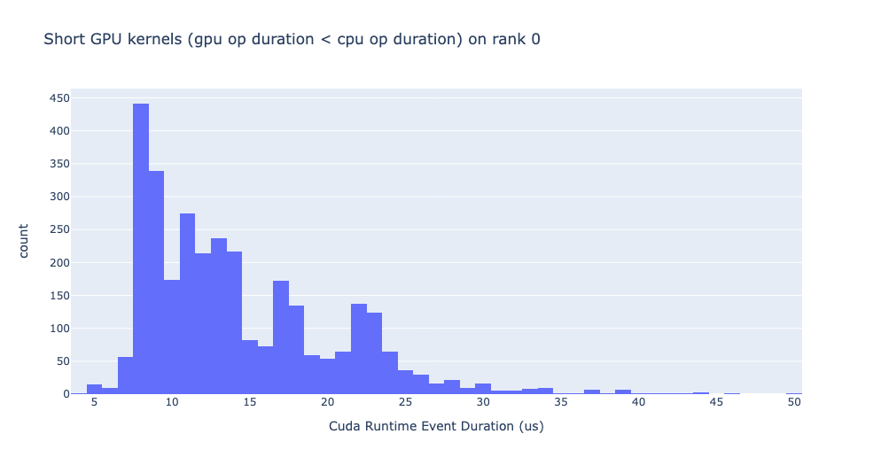
运行时事件异常值
运行时异常值依赖于用于分类异常值的阈值，因此 get_cuda_kernel_launch_stats API 提供了 runtime_cutoff 参数来配置该值。
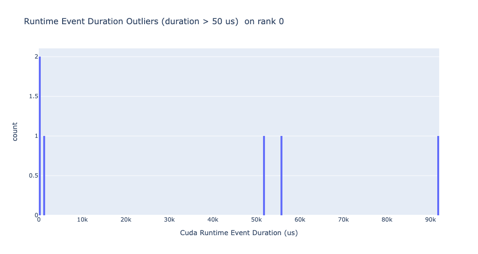
启动延迟异常值
启动延迟异常值取决于用于分类异常值的截止值，因此 get_cuda_kernel_launch_stats API 提供了 launch_delay_cutoff 参数来配置该值。
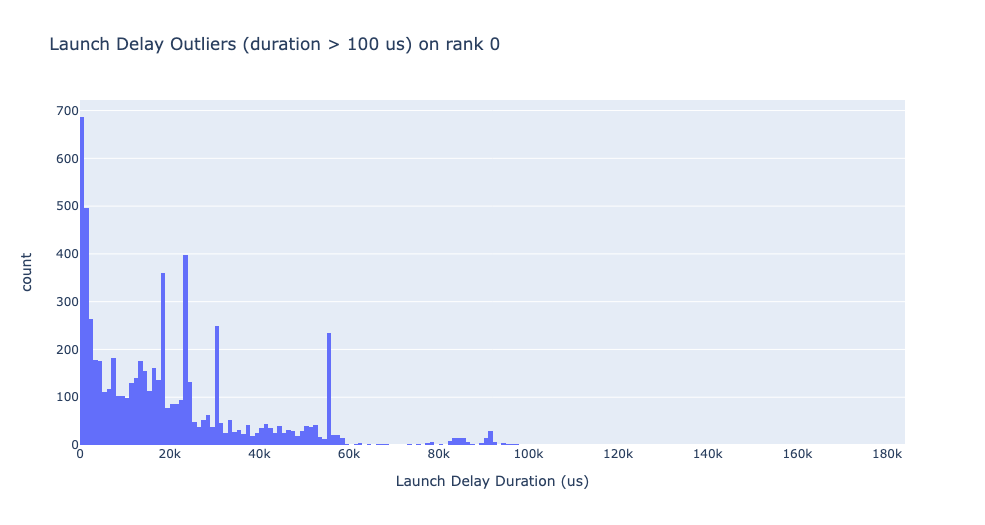
结论 ¶
在这个教程中，您学习了如何安装和使用 HTA，这是一个性能工具，可以帮助您分析分布式训练工作流程中的瓶颈。要了解如何使用 HTA 工具进行跟踪差异分析，请参阅使用整体跟踪分析进行跟踪差异。